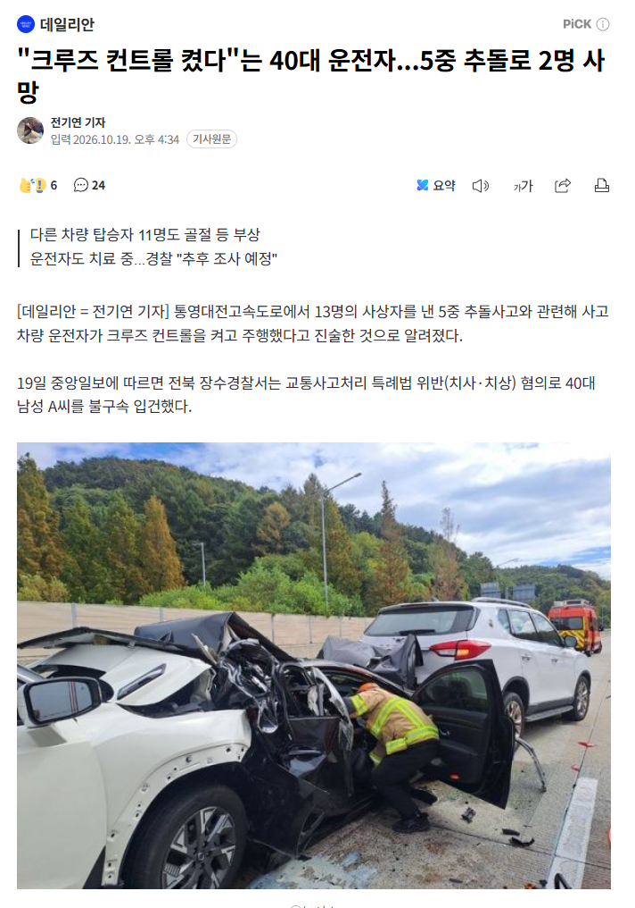

https://n.news.naver.com/article/119/0003144373

https://n.news.naver.com/article/119/0003144373

저 되도안한 크루즈기술에 뇌의탁해서 전방주시 안하는 운전자들로 고속도로 정체구간에 서있으면 개불안함.
전방주시 안하는 새끼들 냅다 반자이~이지랄병으로 자폭 미사일 박아버리는 수준이니. 오늘도 개드립에서 3건이나 영상봤네.
저거 계속 경고뜨는데 저정도의 딴짓은 어캐하나 ㅈㄴ궁금하네
이거 몇일전에 개드립글에서 본 사고장면인데 뉴스 떴구나 진짜 무슨 급발진 사고인거마냥 감속도 안하고 그냥 들이받던데.... 크루즈 켜도 전방주시는 해야지 미친새끼가
크루즈 킨다 : ㅇㅋ
1차선에서 크루즈 킨다 : ??
1차선에서 크루즈 키고 유튜브 본다 : ???????????
크루즈는 자비스가 아니야 이것들아
운전 중에 딴짓 좀 하지마라
크루즈는 막히는길 20-30km가다멈추다 할때말고는 안쓰게되던데
안전 보조장치 개념으로 사용해야지 편의기능이라고 생각하면 ㅈ됨
크루즈는 뻥뚫린 구간단속때만 쓰는거 아니였노 발로 밟기있기 귀찮으니까 운전대 잡고 전방주시 하믄서
구간단속 정체구간 딱 그럴때쓰라고만들어놓은거긴한데... 좀 하자있는기술이긴함
티...볼리?
크루즈 컨트롤 문제가 아니라 본인이 딴짓한게 문제지 크루즈 컨트롤킨상태에서 계속 직선구간이라 핸들 잡고 있어도 핸들 움직임이 없으면 핸들잡으라고 경고 뜨는데 ㅋㅋㅋ